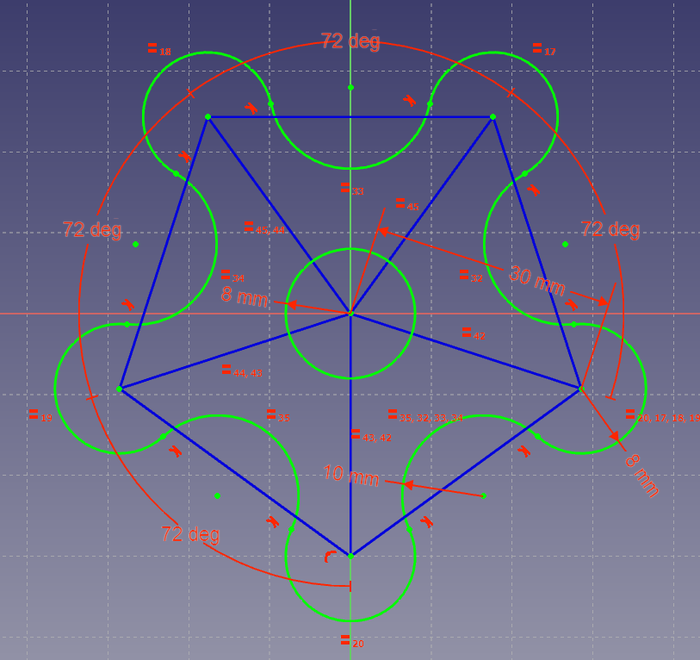

|
| Thema |
|---|
| Zeichnen (Sketcher) |
| Niveau |
| Anfänger |
| Zeit zum Abschluss |
| 10 Minuten |
| Autor |
| holdi |
| FreeCAD version |
| 0.16 |
| Beispieldatei(en) |
Einleitung
Dieses Tutorial soll den Leser in die grundlegenden Arbeitsschritte im Arbeitsbereich Zeichnen einführen. Übungsobjekt ist die im folgenden Bild enthaltene Rosette.
.
.
{kind=link}
Status
Version 0.16
Vorarbeit
- Öffnen eines neuen (leeren) Dokuments
- Wechseln in den Arbeitsbereich Zeichnen
- Klicken auf
 Neue Zeichnung; Vorschlag annehmen: xy-Ebene (XY-Plane), nicht auf Rückseite (Reverse direction) dieser Ebene, Koordinatenursprung nicht versetzen (Offset = 0)
Neue Zeichnung; Vorschlag annehmen: xy-Ebene (XY-Plane), nicht auf Rückseite (Reverse direction) dieser Ebene, Koordinatenursprung nicht versetzen (Offset = 0)
Wir befinden uns nun im Arbeitsbereich Zeichnen und werden die Mehrzahl der diesem Arbeitsbereich zugeordneten Werkzeuge anwenden.
Die im Dialog-Fenster (am linken Rand, Combo-Ansicht) im Teilfeld Bedienelemente bearbeiten angezeigten Grundeinstellungen werden übernommen, insbesondere die Verwendung des der Zeichnung untererlegten Rasters . Die automatische Herstellung bestimmter geometrischer Verknüpfungen zwischen gezeichneten Linien bleibt ausgeschaltet (kein Haken bei Automatische Randbedingungen). Einige solche Verknüpfungen werden im Laufe der Übung manuell aktiviert.
Rosette
Mathematisch-geometrische Zusammenhänge
Die zu zeichnende regelmässige Rosette besteht aus zwei mal 5 Kreisbögen, die paarweise fluchtend miteinander verbunden sind.
- Sie ist nur erstellbar, wenn die Summe der Radien zweier benachbarter Kreisbögen größer als die halbe Distanz zwischen den Mittelpunkten der äußeren Kreisbögen ist.
Unter diesen Bedingungen lassen sich dennoch verschiedene ( insgesamt 32) Rosetten zeichnen.
- Zu zeichnen ist diejenige Rosette, deren Mittelpunkte der nach innen "hängenden" Kreisbögen sämtlich außerhalb der Verbindungsgeraden zwischen den Mittelpunkten der äußeren Kreisbögen liegen.
Hilfslinien
Das Anfertigen einer komplexen Zeichnung wird durch vorheriges Ziehen von (blauen) Hilfslinien (Construction geometry) erleichtert. Während deren Erzeugung ist in den Hilfslinien-Modus (Construction mode) umzuschalten.
- Umschalten in den
 Hilfslinien-Modus
Hilfslinien-Modus - Klicken auf
 Linie (Line in sketch)
Linie (Line in sketch) - Mauszeiger dem Koordinatenursprungspunkt nähern; diesen anklicken, wenn er andersfarbig wird
- Linie in beliebiger Länge und Richtung erzeugen: Anklicken setzt deren Endpunkt
- weitere 4 Linien aus Koordinatenursprung heraus zeichnen; Verteilung der 5 Linien etwa gleichförmig über 360°
- Vermaßung der Hilfslinien (maßliche Festlegungen (datum constraints oder dimensional constraints))
- eine der Konstruktionslinien auswählen (anklicken, Farbe ändert sich)
- auf schräge Distanz klicken .
- 30 mm eintragen
- alle 5 Konstruktionslinien auswählen (dabei Ctrl-Taste drücken)
- auf gleiche Länge klicken; die Länge der 4 übrigen Linien wird gleich der der ersten Linie: 30 mm
- zwei benachbarte Konstruktionslinien auswählen
- auf Winkel festlegen
 klicken
klicken - 72° eintragen
- Winkelfestlegung 3x wiederholen (fünfte Vergabe überflüssig, da Rest von 4x72° zu 360° wieder 72° sind)
- Endpunkte benachbarter radialer Geraden mit Werkzeug Linie (Line in sketch) miteinander verbinden; darauf achten, dass Punkte vor dem Anklicken die Farbe wechseln
- Hilfslinien-Modus beenden: erneutes Klicken auf Hilfslinien-Modus
{kind=link}
{kind=link}
Anmerkung: Im Arbeitsbereich Entwurf (Draft) kann anstatt über die 5 radialen Hilflinien zu gehen, ein "fertiges" Fünfeck übernommen werden: klicken auf  Polygon
Polygon
Rosette
Zu zeichnen ist ein in sich geschlossener Kurvenzug und ein zentrisches Loch.
zentrisches Loch
- Werkzeug Kreis auswählen
- Mittelpunkt des Kreises in den Nullpunkt des Koordinatensystems (Schnittpunkt zwischen x- und y-Achse) setzen
- beliebig großen Kreis erstellen (Kreis geht durch den dafür anzuklickenden Punkt)
{kind=link}
Ergebnis
Als Ergebnis wird in einem sogenannten parametrischen CAD-Programm eine vollständig benannte bzw. festgelegte (fully constrained) Zeichnung erwartet.
Momentan ist der Freiheitsgrad noch gleich Eins (Rosette ist um den Mittelpunkt drehbar).
- den Mittelpunkt des der vertikalen y-Achse am nächsten Kreisbogens und diese Achse anwählen
- auf Punkt auf Linie
 klicken
klicken
Diese letzte Maßnahme ist wie bereits einige vorher getroffenen eine geometrische Festlegung (geometric constraint). Eine Vermassung ist eine dimensionale Festlegung (datum or dimensional constraint).
Die nun erreichte Vollständigkeit wird dadurch bestätigt, dass alle Linien hellgrün sind (Freiheitsgrad = Null).
Siehe auch
.
.
.
.
.
.
.
.
.
.